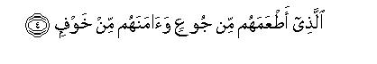

بسم الله الرحمن الرحيم
Sayyid Abul Ala Maududi - Tafhim al-Qur'an - The Meaning of the Qur'an
 106.
Surah Quraish
106.
Surah Quraish
The Surah has been so entitled after the word Quraish in the very first verse.
Although Dahhak and Kalbi regard it as a Madani Surah, yet a great majority of the commentators are agreed that it is Makki, and a manifest evidence of this are the words Rabba hadh-al-Bait (Lord of this House) of this Surah itself. Had it been revealed at Madinah, the words "this House" for the Ka'bah could not be relevant. Moreover, its subject matter so closely relates to that of Surah Al-Fil that probably it was revealed immediately after it, without any other Surah intervening between them. On the basis of this very relevance, some of the earliest scholars regard the two Surahs as one entity. This view is strengthened by the traditions which say that in the Quran copy belonging to Hadrat Ubayy bin Ka'b these two were written as one Surah, i.e. without the insertion of the Bismillah between them. Furthermore, Hadrat Umar had once recited the two Surahs as one in the Prayer. But this view is not acceptable because in the Quran copy which Hadrat Uthman (may Allah bless him) had got written down officially by the cooperation of a large number of the Companions and sent to the centers of Islamic lands, the Bismillah was written between these two Surahs, and since then these two have been written as separate Surahs in all the copies of the Quran everywhere in the world. Moreover, the style of the two Surahs is so different that they manifestly appear as two separate Surahs.
To understand the Surah well it is essential that one should keep the historical background relevant to the contents of this Surah and of Surah Al-Fil in view.
The tribe of Quraish was scattered throughout Hijaz until the time of Qusayy bin Kilab, the ancestor of the Holy Prophet (upon whom be Allah's peace). First of all, Qusayy gathered it in Makkah and this tribe was able to gain authority over the Ka'bah. On that very basis Qusayy was called mujammi (uniter, assembler) by his people. This man by his sagacity and wisdom founded a city state in Makkah and made excellent arrangements for the welfare of the pilgrims coming from all over Arabia, with the result that the Quraish were able to gain great influence among the Arabian tribes and lands. After Qusayy the offices of the state of Makkah were divided between his sons, Abdi Manaf and Abd ad-Dar, but of the two Abdi Manaf gained greater fame even during his father's lifetime and was held in high esteem throughout Arabia. Abdi Manaf had four sons: Hashim, Abdi Shams, Al-Muttalib, and Naufal. Of these Hashim, father of Abdul Muttalib and grandfather of the Holy Prophet, first conceived the idea to take part in the trade that passed between the eastern countries and Syria and Egypt through Arabia, and also to purchase the necessities of life for the Arabians so that the tribes living by the trade route bought these from them and the merchants living in the interior of the country were attracted to the,market of Makkah. This was the time when the Sasanian kingdom of Iran had captured the international trade that was carried out between the northern lands and the eastern countries and Byzantine empire through the Persian Gulf. This had boosted up the trade activity on the trade route leading from southern Arabia to Syria and Egypt along the Red Sea coast. As against the other Arabian caravans, the Quraish had the advantage that the tribes on the route held them in high esteem on account off their being keepers of the Ka'bah. They stood indebted to them for the great generosity with which the Quraish treated them in the Hajj season. That is why the Quraish felt no fear that their caravans would be robbed or harmed any where on the way. The tribes on the way did not even charge them the heavy transit taxes that they demanded from the other caravans. Hashim taking advantage of this prepared the trade scheme and made his three brothers partners in it. Thus, Hashim obtained trade privileges from the Ghassanide king of Syria, Abdi Shams from the Negus, Al-Muttalib from the Yamanite nobles and Naufal from the governments of Iraq and Iran, and their trade began to flourish. That is how the four brothers became famous as traders and began to be called ashab al-ilaf (generators of love and affection) on account of their friendly relations with the tribes and states of the surrounding lands.
Because of their business relations with Syria, Egypt, Iraq, Iran, Yaman and Abyssinia, the Quraish came across such opportunities and their direct contact with the culture and civilization of different countries so enhanced the level of their knowledge and wisdom that no tribe in Arabia could match and equal them. As regards wealth and worldly goods they became the most affluent tribe, and Makkah became the most important commercial center of the Arabian peninsula. Another great advantage that accrued from these international relations was that they brought from Iraq tile script which later was used for writing down the Quran. No other Arabian tribe could boast of so many literate people as Quraish. For these very reasons the Holy Prophet (upon whom be peace) said: "Quraish are the leaders of men." (Musnad Ahmad: Marwiyat Amr bin al As). And according to a tradition from Hadrat Ali in Baihaqi, the Holy Prophet said: "First the leadership of the Arabians was in the hands of the people of Himyar, then Allah withdrew it from them and gave it to Quraish".
The Quraish were thus prospering and flourishing when the event of Abrahah's invasion of Makkah took place. Had Abrahah at that time succeeded in taking this holy City and destroying the Ka'bah, the glory and renown of not only the Quraish but of the Ka'bah itself, would have faded away, the belief of the pre-Islamic Arabia that the House indeed was Allah's House would have been shattered, and the high esteem in which Quraish were held for being keepers of the House throughout the country would have been tarnished. Then, after the Abyssinian advance to Makkah, the Byzantium also would have taken the initiative to gain control over the trade route between Syria and Makkah: and the Quraish would have been reduced to a plight worse than that in which they were involved before Qusayy bin Kilab. But when Allah showed this manifestation of His power that the swarms of birds destroyed 60,000 Abyssinian troops brought by Abrahah by pelting then, with stones, and from Makkah to Yaman they went on falling and dying by the wayside, the faith of the Arabs that the Ka'bah indeed was Allah's House increased manifold, and the glory and renown of Quraish too was enhanced considerably throughout the country. Now the Arabs were convinced that they were under Allah's special favor; therefore, they visited every part of Arabia fearlessly and passed through every land with their trade caravans unharmed. No one could dare touch them with an evil intention. Not to speak of touching them, even if they had a non-Quraishite under their protection, he too was allowed to pass unharmed.
As all this was well known in the time of the Holy Prophet's appointment to Prophethood, there was no need to mention them. That is why in the four brief sentences of this Surah, Quraish were simply asked to consider:"When you yourselves acknowledge this House (i. e. the Ka'bah) to be Allah's House, and not of the idols, and when you fully well know that it is Allah alone Who has granted you peace by virtue of this House, made your trade and commerce flourish and saving you from destitution favored you with prosperity you should then worship and serve Him alone."

In the name of Allah, the Compassionate, the Merciful.


[1-4] As the Quraish become accustomed.1 Accustomed to their journeys in the winter and the summer.2 So they should worship the Lord of this House.3 Who has fed them against hunger,4 and made them secure against fear.5
1The word ilaf, as used in the original is from alf which means to be habituated and accustomed to be reunited after breaking up, and to adopt something as a habit. About the lam that is prefixed to ilaf, some Arabists have expressed the opinion that it is to express surprise and wonder. Thus, Li-ilaf-i Quraish in means: "How surprising is the conduct of Quraish! It is only by virtue of Allah's bounty that they are reunited after their dispersion and have become accustomed to the trade journeys which have brought them their prosperity,. and yet from Allah's worship and service they are turning away." 'This is the opinion of Akhfash, Kisa'i and Farra', and holding this opinion something after this lam, the same thing itself is regarded as sufficient to show that the attitude and conduct a person has adopted in spite of it, is surprising and amazing". On the contrary, Khalil bin Ahmad, Sibawaih and Zamakhshari say that this is the lam of to `lil and it relates to the following sentence: Fa! ya `budu Rabba hadh a!-Bait, which means: "Allah's blessings on the Quraish are countless. But if for no other blessing, they should worship Allah at least for this blessing that by His bounty they became accustomed to the trade journeys, for this by itself is indeed a great favor of Allah to them. "
2That is, the trade journeys. In summer the Quraish traveled northward to Syria and Palestine, for they are cool lands, and in winter southward to Yemen, etc. for they are warm.
3"This House": the Holy Ka'bah. The sentence means that the Quraish have attained to this blessing only by virtue of the House of Allah. They themselves acknowledge that the 360 idols, which they worship, are not its lord, but Allah alone is its Lord. He alone saved them from the invasion of the army of elephants. Him alone they had invoked for help against Abrahah's army. 'It was His House the keeping of which enhanced their rank and position in Arabia, for before that they were dispersed and commanded no position whatever. Like the common Arab tribes they too were scattered factions of a race. But when they rallied round this House in Makkah and began to serve it, they became, honorable throughout Arabia, and their trade caravans began to visit every part of the country fearlessly. Therefore, whatever they have achieved, it has been possible only by the help of the Lord of this House; therefore, they should worship Him alone.
4The allusion implies that before the Quraish came to Makkah, they were a scattered people in Arabia and living miserable lives. After their gathering together in Makkah they began to prosper, and the Prophet Abraham's prayer for them was literally fulfilled when he had prayed: "Lord, I have settled some of my descendants in a barren valley near Thy sacred House. Lord, I have done this in the hope that they will establish salat there. So turn the hearts of the people towards them, and provide fruits for their food." (Ibrahim: 37)
5"Secure against fear" : secure from the fear from which no one anywhere in Arabia was, safe. There was no settlement anywhere in the country the people of which could sleep peacefully at night, for they feared an attack any time from any quarter by some unknown enemy. No one could step out of the bounds of his tribe for fear of life or of being taken prisoner and made a slave. No caravan could travel safely from fear of attack, or without bribing influential chiefs of the tribes' on the way for safe conduct, But the Quraish were immune from every danger; they had no fear of an attack from an enemy. Their caravans, small or big, freely passed on the trade routes everywhere in the country. As soon as it become known about a certain caravan that it belonged to the keepers of the Ka`bah, no one could dare touch it with an evil intention, so much so that even if a single Quraishite was passing on the way, he was allowed to pass unharmed and untouched as soon as the word haram " or "ana min haramillah " was heard from him.